DAM
Desarrollo de Aplicaciones Multiplataforma
Andy Pérez Rondón

TEMA 3 Entornos de desarrollo
Sistema de control de versiones distribuido git
Instalación y procesos (continua entre ejercicios)
Mientras vas realizando los diferentes pasos, ve haciendo una pequeña guía en markdown del que consideras más importante, relacionándolo con el apartado de teoría. Anota en ella los diferentes cambios que vas haciendo sobre tu directorio de trabajo.
GIT
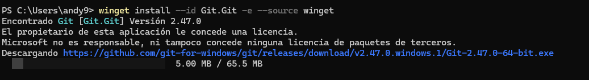
Instalación mediante comando
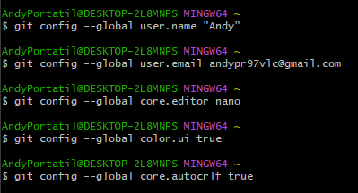
Configuración de GIT
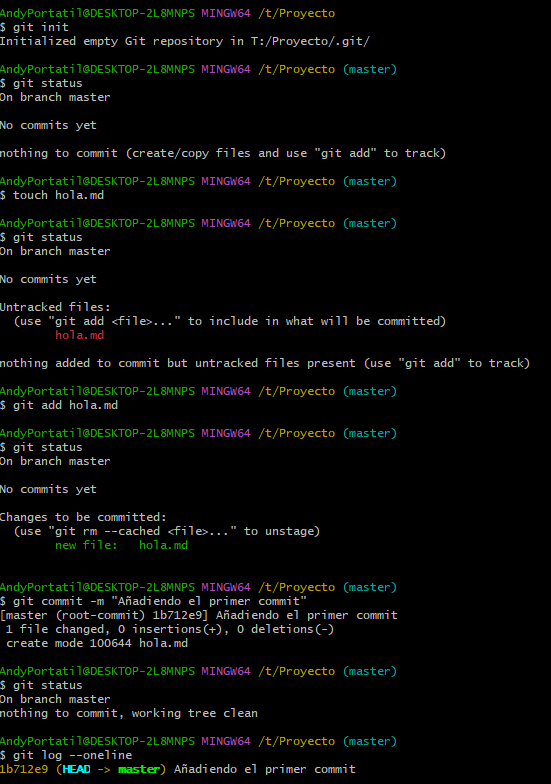
Creación, inicialización de la carpeta del proyecto y primer commit
Ejercicio 1
Prueba a modificar el fichero y observa los cambios en el estado. En qué estado se encontrará ahora el archivo? Qué tendremos que hacer para que los cambios se reflejen en el repositorio? Investiga sobre el parámetro -a de la orden git commit e intenta relacionarlo con este ejercicio.
La opción -a permite hacer un commit de todos los archivos al mismo tiempo
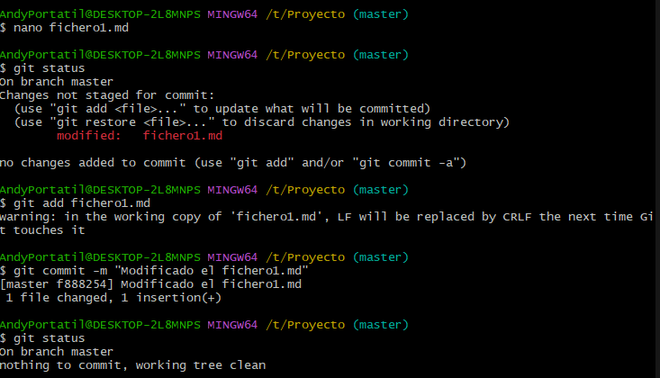
Cambios realizados en el archivo Fichero1.md
Ejercicio 2
Crea dos ficheros, denominados tmp1.md y tmp2.md y añádelos dentro del repositorio, comprobando el estado en cada paso, y verificando que están en el repositorio.
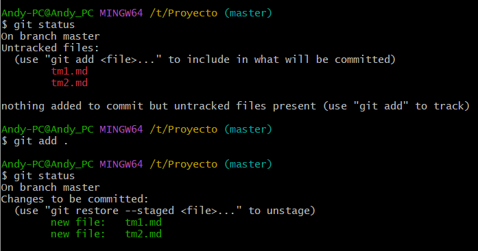
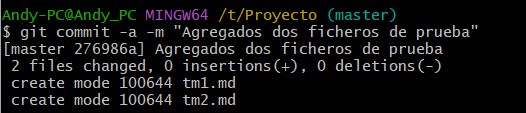
Creación de ambos archivos, comprovación y verificación
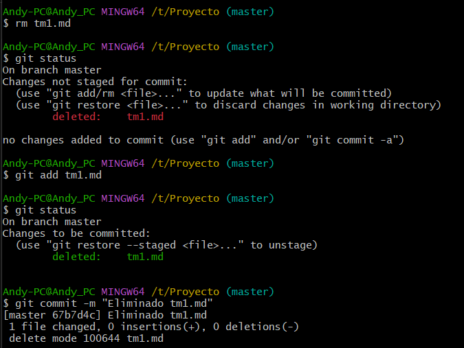
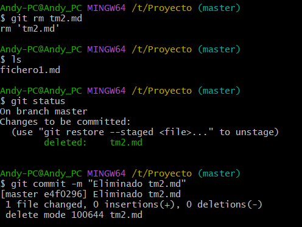
Eliminación de archivos
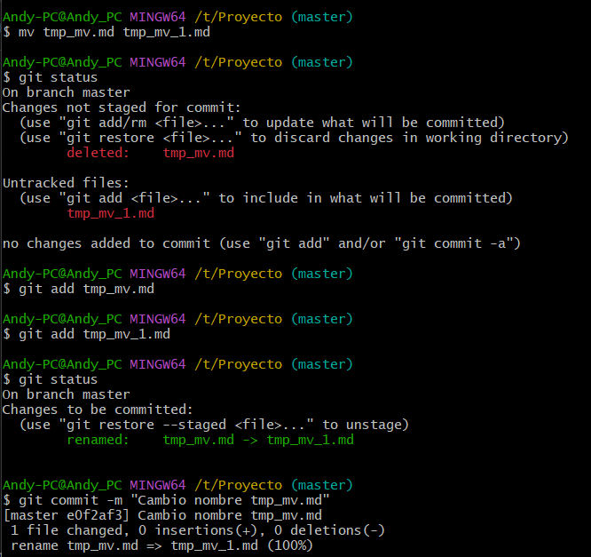
Cambio de nombre local
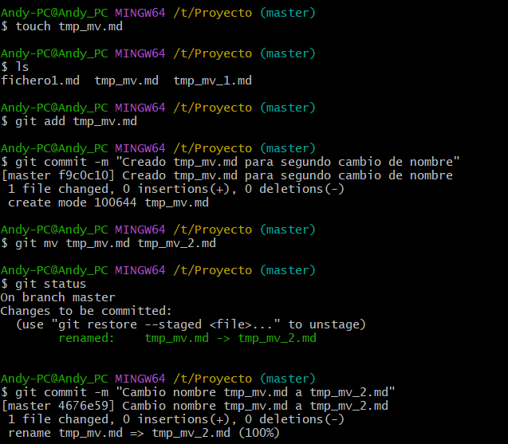
Cambio de nombre directo desde el repositorio
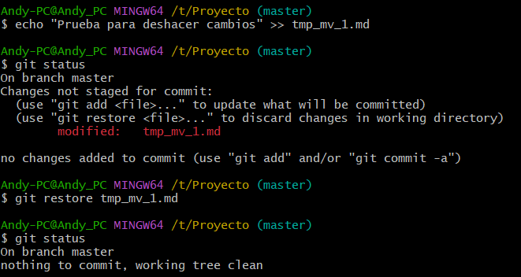
Deshacer cambios
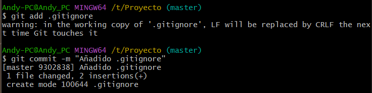
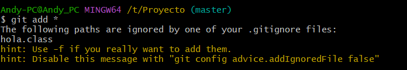
Ignorado de ficheros
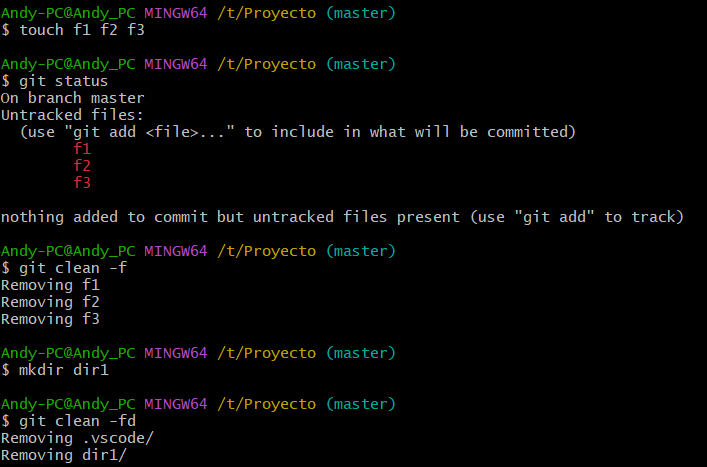
Eliminación de archivos y carpetas no seguidos
Ejercicio git log y git log --oneline
Una vez hayas finalizado, copia como código el resultado de la orden:
git log
Andy-PC@Andy_PC MINGW64 /t/Proyecto (master)
$ git log
commit cc06434cd4149daf9c3cae5b3fabf77098fe2f90 (HEAD -> master)
Author: andy <andypr97vlc@gmail.com>
Date: Mon Oct 28 17:37:16 2024 +0100
Revert "recuperado archivo tm2.md"
This reverts commit e4f0296bf13bdee9aa6805d3a94e2612ba8f33c9.
commit 974977d0a2380c4e0053561b121480a4d879e5d3
Author: andy <andypr97vlc@gmail.com>
Date: Mon Oct 28 17:36:24 2024 +0100
Eliminado de nuevo tm1.md por equivocacion al recuperarlo
commit a95768eda74d12d23e4671990020cc47da1f8996
Author: andy <andypr97vlc@gmail.com>
Date: Mon Oct 28 17:33:21 2024 +0100
Revert "Eliminado tm1.md"
This reverts commit 67b7d4cf79897f45034faa8ab364a13bf1f0a9db.
commit 21b57a9a827c135e61dd83982a80a932824cda0f
Author: andy <andypr97vlc@gmail.com>
Date: Mon Oct 28 17:33:01 2024 +0100
Añadido archivo Java
commit 9302838f40d2a40b7529501872f9fad959c5cee0
Author: andy <andypr97vlc@gmail.com>
Date: Mon Oct 28 17:13:45 2024 +0100
Añadido .gitignore
commit 4676e59d4256529f05d5a57c862735865f0ba489
Author: andy <andypr97vlc@gmail.com>
Date: Mon Oct 28 17:07:50 2024 +0100
Cambio nombre tmp_mv.md a tmp_mv_2.md
commit f9c0c10fa17554f5a0b4935a473adc8daa575d7a
Author: andy <andypr97vlc@gmail.com>
Date: Mon Oct 28 17:06:52 2024 +0100
Creado tmp_mv.md para segundo cambio de nombre
commit e0f2af332e7dc774b8e4f5db408dc2bc079ecb82
Author: andy <andypr97vlc@gmail.com>
Date: Mon Oct 28 17:04:53 2024 +0100
Cambio nombre tmp_mv.md
commit 35452ccf40f28caec564056166457d432d01a6a3
Author: andy <andypr97vlc@gmail.com>
Date: Mon Oct 28 17:02:26 2024 +0100
tmp_mv.md creado
commit e4f0296bf13bdee9aa6805d3a94e2612ba8f33c9
Author: andy <andypr97vlc@gmail.com>
Date: Mon Oct 28 16:19:31 2024 +0100
Eliminado tm2.md
commit 67b7d4cf79897f45034faa8ab364a13bf1f0a9db
Author: andy <andypr97vlc@gmail.com>
Date: Mon Oct 28 16:18:19 2024 +0100
Eliminado tm1.md
commit c2ca5e597f32abbfebf6a47044787712c8b1b9d7
Author: andy <andypr97vlc@gmail.com>
Date: Mon Oct 28 16:14:18 2024 +0100
Fichero 1 commit proba visual
commit 276986ae780a7b57bf903a7365fa83e3d302f6b0
Author: andy <andypr97vlc@gmail.com>
Date: Mon Oct 28 15:45:51 2024 +0100
Agregados dos ficheros de prueba
commit f888254bc3b9927f6d04dc173cba74b780db0774
Author: Andy <andypr97vlc@gmail.com>
Date: Mon Oct 28 13:52:19 2024 +0100
Modificado el fichero1.md
commit 31fc770ec670bbbeb40ce89ce90529f8de8b5f01
Author: Andy <andypr97vlc@gmail.com>
Date: Mon Oct 28 13:50:24 2024 +0100
Agregado el primer commit
commit 27d4a5fe77c5174fb4b2dadec03c88ea0ff15667
Author: Andy <andypr97vlc@gmail.com>
Date: Mon Oct 28 13:49:03 2024 +0100
cambios
commit 1b712e90ed642b7794830dd2112707f975db1bf8
Author: Andy <andypr97vlc@gmail.com>
Date: Mon Oct 28 13:37:32 2024 +0100
Añadiendo el primer commit
Y adjunta al final del documento también un pantallazo del resultado de:
git log --oneline
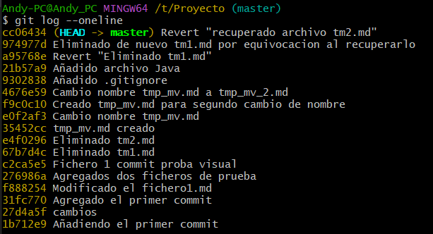